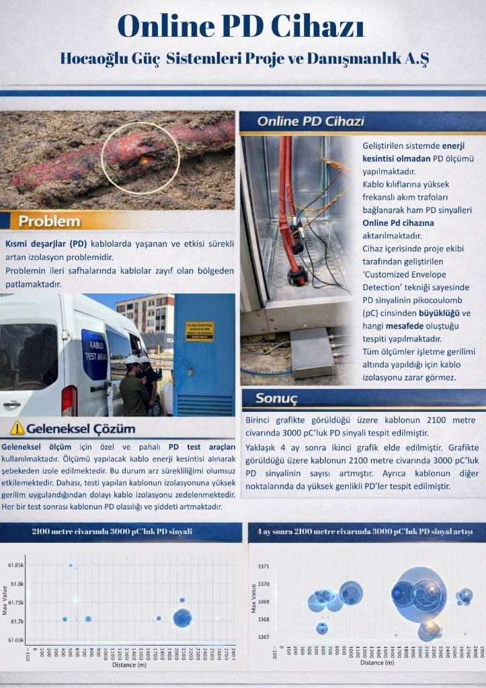

TRL 8 • Sahada Aktif (24 Aydır Kesintisiz)
Donanım & Analiz Sistemi
Online PD Cihazı (Online Kısmi Deşarj Takip Sistemi)
Orta gerilim yeraltı kablolarında zamanla şiddeti ve sıklığı artan kısmi deşarjları (PD) işletme gerilimi altında ve enerji kesintisi yapmadan sürekli izleyen yerli donanım ve yazılım platformu.
